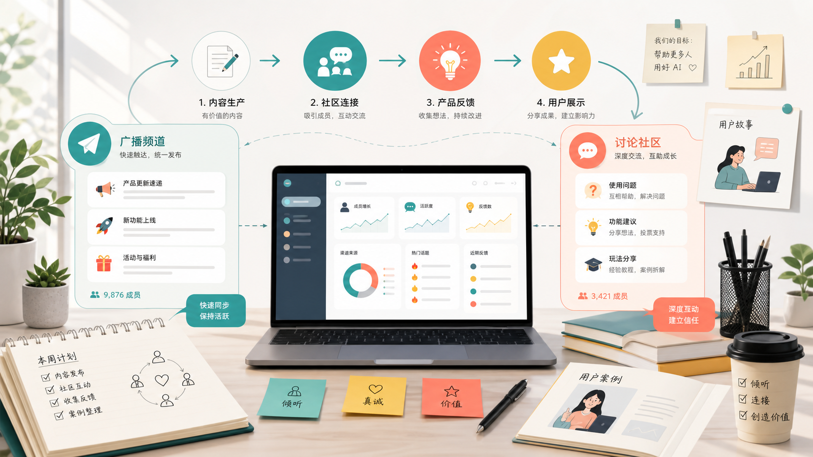

为什么 AI 产品特别适合做社区
因为用户不只是想知道产品有什么功能，
他们更想知道“我能拿它做什么”。
AI 产品需要被“示范”
很多人看到 AI 工具会觉得厉害，但不知道怎么用。社区可以每天展示 prompt、workflow、案例，让用户更快理解价值。
用户会互相启发
一个用户分享“我用它做了竞品分析”，另一个人可能马上想到“我也可以用它做内容选题”。这就是社区的放大作用。
社区也是产品雷达
用户问的问题、抱怨的点、反复出现的需求，都是产品团队最真实的反馈，比空想 roadmap 更可靠。
Telegram vs Discord
两个平台不是二选一，
而是承担不同任务。
可以把 Telegram 想成“快速通知和引流入口”，把 Discord 想成“核心用户长期参与的空间”。
Telegram
适合快速触达、公告、福利和轻量转化。
- 发产品更新、活动提醒、限时福利
- 承接 X、LinkedIn、Reddit、KOL 带来的流量
- 用 bot 和置顶消息让新人快速领取资源
- 适合每日短内容，比如一个 prompt、一个技巧、一个案例
Discord
适合结构化运营、内容沉淀、用户分层和长期留存。
- 设置清楚的频道，让新人不迷路
- 沉淀 prompt library、workflow、FAQ、案例库
- 管理 beta tester、power user、ambassador
- 组织 workshop、AMA、challenge 和作品展示
维度
Telegram
Discord
通俗比喻
像一个消息广播群
像一个分区清楚的俱乐部
最适合
拉新、提醒、公告、快速转化
新人引导、深度讨论、内容沉淀
运营重点
消息要短、频率要稳、链接要明确
频道要清楚、活动要固定、身份要分层
看什么指标
入群率、点击率、消息互动率
发言率、UGC、活动参与、留存
从 0 到 1 的 7 步框架
不要从“建群”开始，
要从“用户为什么要留下”开始。
先定义社区的价值
不要叫它“官方交流群”。你要告诉用户：进来能解决什么问题。
好理解的定位：
Prompt 实验室、AI workflow 模板库、Beta 用户反馈池、用户作品展示区。
搭好 Telegram 和 Discord 的基本结构
Telegram 要简单直接，Discord 要分区清楚。结构不是为了好看，而是为了让新人知道自己该去哪里。
# start-here
# announcements
# prompt-library
# workflow-sharing
# showcase
# help-support
# feature-requests
# beta-access
设计新人前 10 分钟
一个新人刚进来时，最怕看到一堆频道和一堆消息，不知道从哪开始。你要给他一条很短的路。
- 告诉他这个社区能帮他什么。
- 让他领取 starter kit。
- 让他选择自己的身份或使用场景。
- 引导他做第一个小动作，比如复制一个 prompt 或分享一个问题。
准备一个“加入理由”
不要只说“欢迎加入社区”。要把加入动作包装成一个具体收益。
例子：进 Discord 领取「AI 内容增长 Prompt Pack」，10 分钟搭好你的第一个内容工作流。
用固定栏目让社区有节奏
社区不能靠灵感运营。最好让用户知道每周什么时候会发生什么。
周一：本周 AI workflow
周二：用户案例拆解
周三：Prompt battle
周四：产品小技巧
周五：AMA / office hour
周末：最佳作品展示
把普通成员培养成核心成员
当有人经常提建议、分享作品、帮助新人，就不要只把他当普通用户。给他身份、权限和曝光。
Power User
Beta Tester
Prompt Creator
Workflow Builder
Ambassador
用数据判断社区有没有真的增长
人数只是最表层的指标。真正重要的是：用户有没有发言、有没有使用产品、有没有回来、有没有带来新用户。
拉新新增成员、来源渠道、邀请转化率
激活24 小时发言率、starter kit 点击率
互动回复率、活动参与率、UGC 数量
业务注册、激活、付费、产品反馈
怎么引流
引流的关键不是到处贴群链接，
而是给用户一个“现在就点进去”的理由。
最简单的判断标准：如果把群链接拿掉，用户还想不想要你提供的东西？如果答案是想，那这个东西就可以成为引流钩子。
外部内容
展示一个真实结果
资源钩子
模板、额度、内测资格
社区承接
新人领取并完成第一步
用户成果
二次分发，吸引新人
内容平台导流
在 X、LinkedIn、Reddit、小红书、YouTube Shorts 发“结果型内容”。先展示一个成果，再告诉用户完整模板在哪里领。
示例：我用这个 AI workflow 10 分钟完成一版竞品分析。完整模板放在 Discord，进群就能复制。
KOL / Creator 合作
找垂直领域创作者，让他用产品做一个真实案例。不要让他只发广告，要让他的粉丝看到“这个东西怎么用”。
示例：和 AI marketing creator 联合做一场“30 分钟搭内容工作流”的 live session，报名入口放 Telegram。
产品内导流
用户完成第一次生成、遇到问题、看到新功能时，都可以引导去社区领取模板、反馈问题或展示结果。
示例：生成完成后提示“把结果发到 #showcase，领取下一个进阶模板”。
活动导流
用 7 天 challenge、prompt battle、AMA、office hour 把“进群”变成“参加一个具体活动”。活动越具体，转化越容易。
示例：参加 7 天 AI workflow challenge，作品统一发在 Discord。
短期快速拉新 SOP
想让社群短期内快速进人，
先做一个“能被转发的理由”。
短期拉新的本质不是到处喊“快来加群”，而是做一个别人愿意转发、愿意领取、愿意参加的东西。下面这套流程适合 3 到 14 天内启动。
先做一个强钩子
准备一个用户马上想要的东西：prompt 包、workflow 模板、免费额度、内测资格、行业案例库、活动名额。
小白照做：
做一个 Notion / Google Doc 页面，标题写清楚“进群领取 30 个 AI 内容增长 Prompt”。
做一个超短报名入口
不要让用户走复杂流程。一个链接、一个二维码、一个清楚的领取说明就够了。
小白照做：
Telegram 置顶消息写“1. 进群 2. 点资源链接 3. 回复你的使用场景”。
先找 30 个种子成员
不要等陌生人自然进来。先邀请朋友、早期用户、创作者、同领域从业者，让群里有第一批真实互动。
小白照做：
私信 30 个人：我在做一个 AI workflow 社区，里面有模板包，想邀请你先进来试用。
连续 7 天发结果型内容
每天发一个真实案例，不要只发口号。内容结构可以固定：问题是什么、AI 怎么做、结果如何、模板在哪里领。
小白照做：
每天发一条：“我用这个 prompt 做了 X，完整版本在群里。”
找 5 到 10 个小型合作方
不一定要找大 KOL。小型 newsletter、垂直社群、工具博主、校园社群、创作者群，转化可能更高。
小白照做：
给合作方一个专属资源包和专属邀请链接，方便追踪哪个渠道带来的人最多。
设置邀请奖励
让老成员有理由带新成员。奖励可以是免费额度、高级模板、活动优先席位、官方展示机会。
小白照做：
邀请 3 人解锁进阶模板；邀请 10 人进入 beta tester 名单。
一个 72 小时快速拉新版本
第 1 天：准备
搭好 Telegram / Discord、置顶消息、资源包、邀请链接、欢迎语。
第 2 天：集中发布
在 3 到 5 个外部平台发结果型内容，同时私信种子用户和合作方。
第 3 天：制造热闹感
展示新成员问题、作品截图、领取人数、活动报名进度，推动二次转发。
快速拉新可以带来人数，但不要只追求“群里很多人”。如果新人进来后没有资源、没有活动、没有下一步，很快就会变成沉默群。
30 天执行路线图
从第一天到第 30 天，
每一周都要有明确动作。
搭好地基
确定社区定位、频道结构、欢迎语、置顶消息、starter kit、FAQ 和基础规则。
邀请种子用户
从已有用户、创作者、朋友、早期 beta 用户中邀请 50 到 100 个高质量成员，主动聊需求。
启动第一个活动
做一次 7 天 challenge、workshop 或 prompt battle，把用户成果集中展示出来。
复盘并放大
整理最佳案例，发到外部平台；复盘来源、激活、留存和产品转化，决定下个月重点。
可直接改用的模板
好的社区运营，
一定能落到具体文案和动作。
Discord 欢迎语
欢迎来到 AI Workflow Lab。
这里不是普通交流群，而是帮你更快用 AI 做出实际结果的地方。
第一步：
1. 去 #start-here 看 3 分钟上手指南
2. 去 #prompt-library 领取 starter kit
3. 在 #use-cases 说一句：你想用 AI 解决什么问题
我们每周会更新一个可复制的 workflow，也会展示社区成员的最佳作品。Telegram 置顶消息
欢迎加入。
这个群每天分享一个能马上用的 AI prompt / workflow。
新成员可以先做三件事：
1. 领取 starter kit：链接
2. 查看本周活动：链接
3. 提交你的使用场景：链接
完整模板库和作品展示区在 Discord：链接7 天活动文案
7 天 AI Workflow Challenge 开始。
每天只需要 15 分钟，用一个模板完成一个真实任务。
你会得到：
- 7 个可复制 prompt
- 7 个工作流示例
- 社区作品展示机会
- 优秀作品可获得免费 credits / beta access
参加方式：加入 Discord，并在 #weekly-challenge 发布你的结果。短期拉新帖
我整理了一套 AI Workflow Starter Kit。
适合想用 AI 做内容、调研、营销、自动化的人。
里面有：
- 30 个可直接复制的 prompt
- 5 个真实 workflow 示例
- 1 个新手上手清单
领取方式：
加入 Telegram / Discord，置顶消息里可以直接拿。
如果你愿意，也可以在群里发你的使用场景，我会挑一些帮大家改成 workflow。指标看板
社区增长不能只看
“群里多少人”。
回答：人从哪里来，哪个渠道质量最好。
回答：人进来以后有没有完成第一步。
回答：社区是不是有真实交流。
回答：社区有没有帮助产品增长。
常见运营问题
社区做起来后，
最常遇到的是这些具体问题。
从 0 到 1 搭社区，第一步做什么？
第一步不是建群，而是定义社区价值。比如 AI 产品社区可以是 prompt 实验室、workflow 模板库、beta 用户反馈池或用户作品展示区。用户知道进来能获得什么，社区才有留存基础。
群里很冷清怎么办？
先判断冷清原因：用户不精准、话题太泛、没有固定活动，还是新人不知道怎么参与。冷启动阶段需要主动制造场景，比如每日 workflow、每周 challenge、点名邀请种子用户分享结果。
怎么把社区反馈变成产品洞察？
把反馈分成 bug、功能请求、使用场景、困惑点和用户好评。每周整理重复出现的问题、用户原话、截图和优先级，同步给产品团队，用社区反馈帮助 roadmap 判断。
怎么证明社区运营对业务有价值？
把社区数据和产品漏斗连起来看，不只看成员数，还看社区成员到注册、首次使用、活跃、付费、推荐的转化。社区如果能持续产生 UGC、反馈和转化，就不是成本中心，而是增长引擎。
Telegram 和 Discord 同时做，会不会重复？
不会。Telegram 承担快速触达和流量承接，Discord 承担结构化沉淀和核心用户运营。简单说，Telegram 让更多人知道发生了什么，Discord 让真正感兴趣的人留下来深度参与。
最后记住这一句